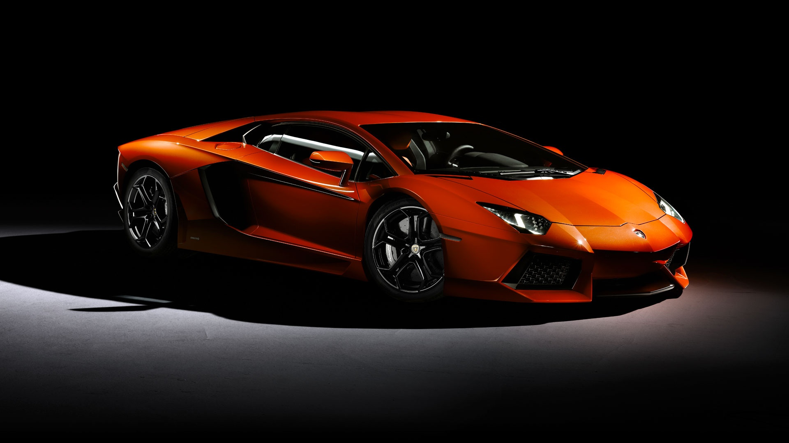

Sadly, bodybuilding continues to get a bad rap to its' name. When people think of the term "Bodybuilding", most tend to think of big bulky oiled-up men with biceps bigger than
their bodies. Yes, this is true; to a certain extent. Bodybuilding is way more than that. It is a practice that consists of not only hard work, but also immense self-discipline and dedication. It is an art. In essence, Bodybuilding is the process of sculpting one's physique based on proper use of nutritional intake and progressive resistance training. When I say sculpting, yes, it is exactly what you think. It involves looking at yourself in the mirror and figuring out which muscular regions of your body need development and you essentially "sculpt and build" on them.
There are 2 different forms of bodybuilding: Classic & Aesthetic (Physique)
Classic: Classic is defined by normally bigger, bulkier physiques where the primary goal is primarily Mass.
Aesthetic (Physique): Aesthetic bodybuilding is a lesser version of the Classic and emphasis is more spread out towards an overall body that is "beautiful and pleasing" to the eye. Core work (abs) are usually A LOT more emphasized in this category compared to normally flat stomachs and thin waists as in Classic style.
Here are 2 photos to distinguish between a Classic style bodybuilder and an Aesthetic style.
Here is a video to display to you what Bodybuilding Competitions look like.
This is from the 2015 Mr. Olympia Men's Physique.
Cars have been one of my favorite interests since as long as I can remember. As a kid, I collected over 100 car & motorcycle models consisting of every single manufacturer known to man (no joke). I have always been fascinated by not only how cars are designed and sculpted on the outside, but more importantly on what's hiding underneath the hood. By the time 7th-8th grade hit, I knew how both a combustion and an electric car functioned and all the science behind it. I started learning more about parts such as the specific type of engine, transmission, alternator etc. Out of the entirety of the automotive industry, one manufacturer has always stood out to me because of their exquisite designs. That manufacturer is Lamborghini. Every single model they have ever come out with never fails to impress me. Hand-crafted tailoring, some of their beasts were created using the same materials that were crafted into F-22 Raptor jets.
Here is a photo of one of my favorite Lamborghini models, the Aventador.

Let the Bass KICK
NO, It's Not Techno
So before I start, I just need to clear some things here. NO, EDM is NOT techno. Techno is a subgenre of EDM. Now, you may ask, what does EDM ACTUALLY stand for? No problem. EDM is short for Electronic Dance Music. Good, now that we have that cleared up, I can continue. Think of EDM as the "ol" in HTML and then each subgenre of it is a "li" under it. There are multiple subgenres but below I'll point out the major ones.
House
Progessive House
Deep/Tropical House
Electro House
Techno
Trance
Drums & Bass
Trap
Dubstep
I have always loved EDM and my interest with cars and this goes hand in hand. I create playlists on my Spotify Account, I listen to this while I hammer away on the weights at the gym, and I join the crazy atmosphere at festivals. Whether you are cruising down the highway or pumping iron at your local gym, EDM always has a song for you.